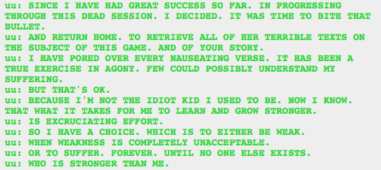

Huh…did he get that choice from Yaldabaoth, or come up with it all on his own?
I can’t decide if he means that he’ll kill everyone stronger than him, or if he’ll just become stronger than them. Probably both. Now it makes more sense why he’s insane, if he’s been suffering non-stop since day 1, trying to get stronger. Silly thing, what is the point of being the strongest if you are miserable?